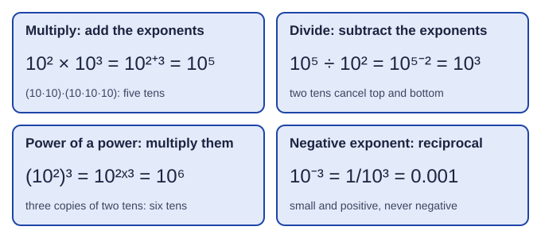

Exponents
An exponent counts repeated multiplication.
Part 1 · Hook
Why this matters
Part 2 · Prerequisite check
Quick check before you start
1. Which conversion factor turns milliliters into liters?
- 1 L / 1000 mL
- 1000 mL / 1 L
- 1 L / 100 mL
- 100 mL / 1 L
Show the answer
Put the unit you have (mL) on the bottom so it cancels: 1 L / 1000 mL.
- Correct: 1 L / 1000 mL:
- 1000 mL / 1 L:
- 1 L / 100 mL:
- 100 mL / 1 L:
2. What does the prefix kilo mean?
- 1000 times the unit
- One thousandth of the unit
- 100 times the unit
- One millionth of the unit
Show the answer
Kilo multiplies by 1000: 1 km = 1000 m.
- Correct: 1000 times the unit:
- One thousandth of the unit:
- 100 times the unit:
- One millionth of the unit:
Part 3 · See it
See it first

Part 4 · Step by step
How it works, step by step
- An exponent counts how many times a base is multiplied by itself10³ means 10 × 10 × 10 = 1000
- Multiplying two powers of the same base strings their factors togethertheir exponents add
- Dividing cancels factors that appear on the top and the bottomthe exponents subtract, and a larger bottom exponent leaves a negative exponent
- A negative exponent means factors left on the bottom10⁻ⁿ is 1/10ⁿ, a small positive number
Part 5 · Key ideas
Key ideas
- An exponent says how many times to multiply the base by itself: 10⁴ = 10,000.
- Multiply: add exponents (10² × 10³ = 10⁵). Divide: subtract (10² ÷ 10⁵ = 10⁻³). Power of a power: multiply (10²)³ = 10⁶.
- Negative exponent = reciprocal: 10⁻³ = 1/1000 = 0.001. Zero exponent: 10⁰ = 1.
- Roots are fractional powers: √(10⁸) = 10⁴. Adding numbers does not combine exponents: 10⁴ + 10⁴ = 2 × 10⁴.
Part 6 · Misconception
A common mistake
The wrong idea: A negative exponent makes the number negative, so 10⁻³ = −1000.
What actually happens: A negative exponent means divide: 10⁻³ = 1/10³ = 0.001, a small positive number. The sign of the number itself comes from a minus sign in front, not from the exponent.
Part 7 · Check yourself
Check yourself
Exam-style questions. Anything you miss goes into your review queue.
1. What is 10³ × 10⁴?
- 10¹²
- 100⁷
- 10⁷
- 10¹
Show the answer
10³ × 10⁴ = (10 × 10 × 10) × (10 × 10 × 10 × 10) = 10⁷: seven tens multiplied together.
- 10¹²: This multiplies the exponents. When you multiply powers of the same base, you add them.
- 100⁷: The base stays 10; only the exponent changes.
- Correct: 10⁷: Right: same base, so add the exponents: 3 + 4 = 7.
- 10¹: This subtracts the exponents, which is the rule for dividing.
2. What is 10⁵ ÷ 10⁸?
- 10⁻³
- 10³
- 10¹³
- 10⁴⁰
Show the answer
Dividing powers of the same base subtracts the exponents: 10⁵⁻⁸ = 10⁻³ = 0.001.
- Correct: 10⁻³: Right: subtract the exponents, 5 − 8 = −3.
- 10³: The sign is backwards: the bottom exponent is larger, so the result is less than 1.
- 10¹³: This adds the exponents, the rule for multiplying, not dividing.
- 10⁴⁰: This multiplies the exponents, which is the rule for raising a power to a power.
3. What is (10⁻²)³?
- 10¹
- 10⁻⁸
- 10⁶
- 10⁻⁶
Show the answer
(10⁻²)³ = 10⁻² × 10⁻² × 10⁻² = 10⁻⁶.
- 10¹: This adds −2 and 3. Raising a power to a power multiplies the exponents.
- 10⁻⁸: This raises 2 to the third power. The rule is to multiply the exponents.
- 10⁶: The size is right but the sign is lost: −2 × 3 is −6.
- Correct: 10⁻⁶: Right: a power of a power multiplies the exponents, −2 × 3 = −6.
4. What does a negative exponent mean, as in 10⁻⁴?
- A negative number, −10,000
- One divided by 10⁴, which is 0.0001
- 10 multiplied by −4, which is −40
- The number 10 with its digits reversed, four times
Show the answer
10⁻⁴ = 1 / 10⁴ = 1/10,000 = 0.0001. A negative exponent gives a small positive number.
- A negative number, −10,000: A negative exponent never makes the number negative; 10⁻⁴ is a small positive number.
- Correct: One divided by 10⁴, which is 0.0001: Right: a negative exponent means the reciprocal: 1/10⁴.
- 10 multiplied by −4, which is −40: An exponent counts how many times the base is multiplied, not a number to multiply by.
- The number 10 with its digits reversed, four times: Exponents are about repeated multiplication, not digit order.
5. Write 10⁻³ as an ordinary decimal number.
Type a number.
Show the answer
10⁻³ = 1 / 10³ = 1/1000 = 0.001. Count the places: the 1 lands in the third place after the decimal point.
- Answer: 0.001
6. A student writes 10⁴ + 10⁴ = 10⁸. What is the error?
- The exponent rules apply to multiplying, not adding; the sum is 20,000
- The exponents should have been multiplied to give 10¹⁶
- The answer should be 10⁴, because the exponents are equal
- The student made no error; adding exponents is the rule here
Show the answer
10⁴ + 10⁴ = 2 × 10⁴ = 20,000. Exponent rules only combine exponents in multiplication and division.
- Correct: The exponent rules apply to multiplying, not adding; the sum is 20,000: Right: 10,000 + 10,000 = 20,000, which is 2 × 10⁴, not 10⁸.
- The exponents should have been multiplied to give 10¹⁶: Multiplying exponents is for a power raised to a power, and this is a sum.
- The answer should be 10⁴, because the exponents are equal: 10⁴ + 10⁴ is twice 10⁴, not 10⁴ itself.
- The student made no error; adding exponents is the rule here: Adding exponents is the rule for multiplying powers, and this problem adds them.
7. Evaluate (10⁻⁴ × 10⁷) ÷ 10². Give the answer as an ordinary number.
Type a number.
Show the answer
Top: 10⁻⁴⁺⁷ = 10³. Then 10³ ÷ 10² = 10¹ = 10.
- Answer: 10
Part 8 · Summary
Summary
Part 9 · Up next
What comes next
Part 10 · Connections